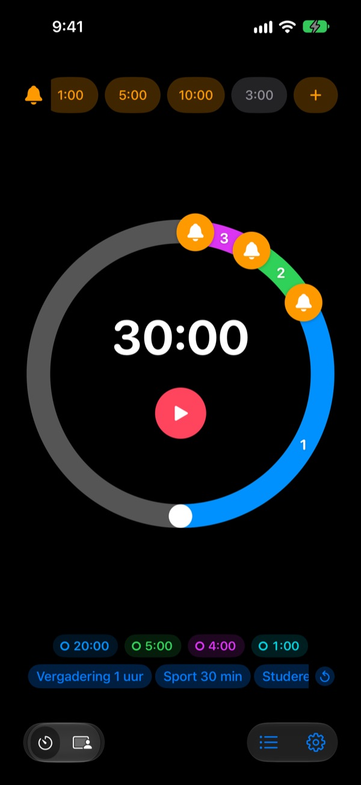
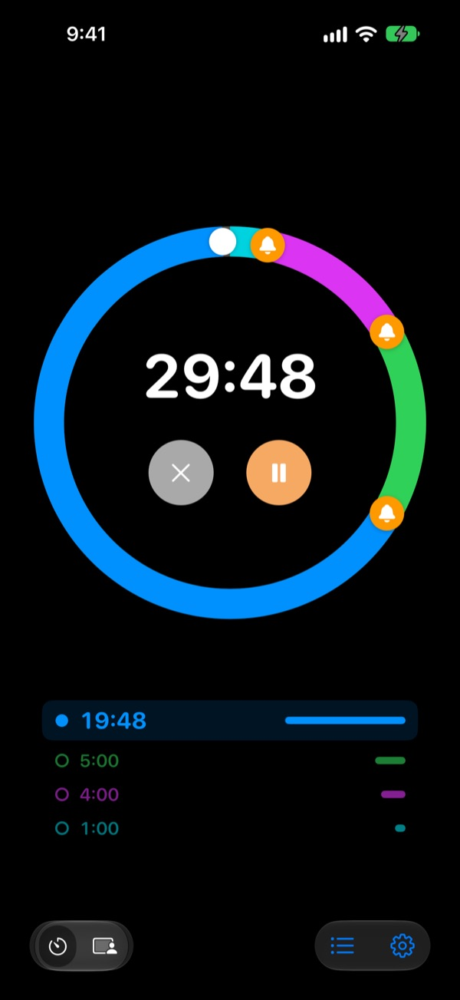
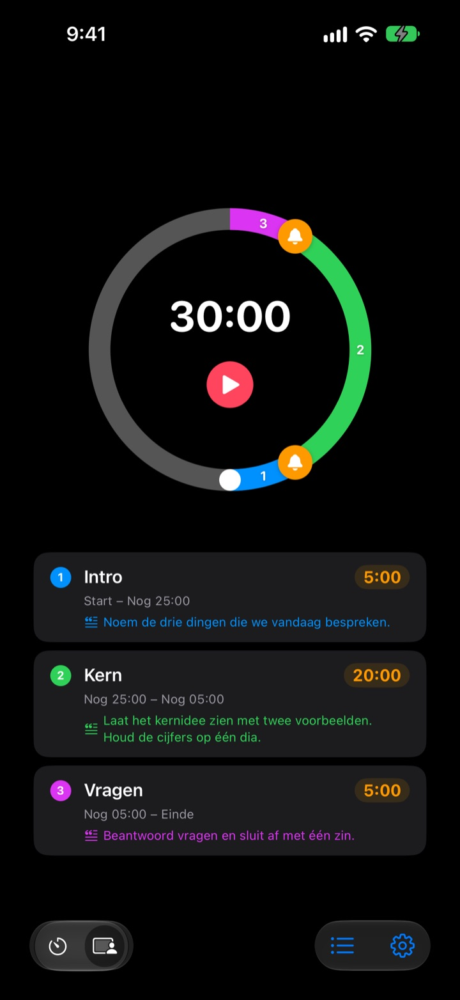
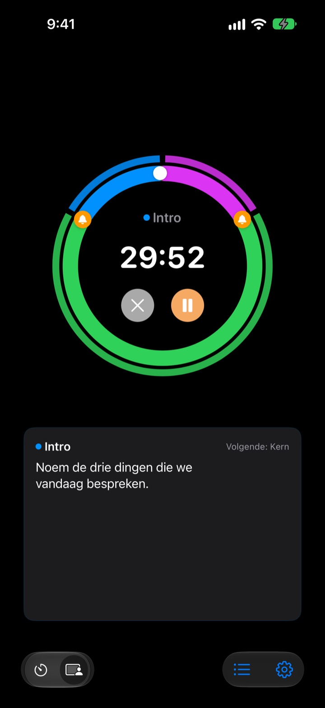

Niet als het voorbij is,
maar ervoor
5 minuten voor het einde van je presentatie, 3 voordat de vergadering afloopt. Rereminder geeft een seintje op elk moment dat jij kiest, zodat je niet steeds op de klok hoeft te kijken.
Voorwaarschuwingen zijn gratis en onbeperkt. Voor iPhone, Apple Watch en Mac.

Probeer het hier
Kies een duur en je waarschuwingen en druk op de rode knop. Een minuut duurt hier een seconde, en je hoort elke waarschuwing op het juiste moment.
Ging je timer ooit af toen het al te laat was?
Een gewone timer gaat pas af bij nul. Je presentatie is voorbij voordat je bij de conclusie bent, de les stopt zonder samenvatting en de vergadering loopt uit in de volgende zonder besluit. Je hebt geen signaal nodig dat de tijd om is, maar een seintje als er nog tijd is om af te ronden.
Seintjes voor het einde, zoveel je wilt
Sleep de belletjes op de wijzerplaat naar 10, 5 of 1 minuut voor het einde, of naar elke andere plek. Er is geen limiet, en elke waarschuwing kan een eigen tekst hebben, zoals ‘Rond de dia’s af’.
Met het scherm uit zie je de resterende tijd op het toegangsscherm en in het Dynamic Island, en je Apple Watch tikt op je pols.

Deel je presentatie op in blokken
Intro 5 minuten, kern 20, vragen 5. Geef elk blok een naam en een script. Bij elke wissel krijg je een seintje met de naam van het blok, en je tijdsindeling klopt vanzelf. (Pro)

Wat je nu wilt zeggen, staat op het scherm
Tijdens het lopen zie je groot het script van het huidige blok en wat er daarna komt. Ga je over nul, dan telt hij door, zodat je precies weet hoeveel je uitloopt. (Pro)

In drie stappen klaar
- 1
Stel de tijd in
Draai aan de wijzerplaat of tik op de tijd en typ hem in. Eén rondje is 60 minuten, twee rondjes 120.
- 2
Zet je waarschuwingen
Tik bovenaan op een label zoals 1:00 of 5:00, of sleep een belletje op de wijzerplaat.
- 3
Start en vergeet het
Vergrendel je iPhone. Je iPhone en Apple Watch melden zich op elk moment dat je hebt ingesteld.
Instellingen die veel gebruikt worden
- Presentatie van 20 minuten
- 5 min van tevoren ‘Naar de conclusie’, 1 min van tevoren ‘Bedanken’
- Les van 50 minuten
- 10 min van tevoren ‘Huiswerk uitleggen’, 3 min van tevoren ‘Samenvatten’
- Vergadering van 30 minuten
- 5 min van tevoren ‘Besluiten vastleggen’
- Pilates- of yogales
- Sessiemodus, één blok per reeks (Pro)
- Studieblok van 25 minuten
- 5 min van tevoren, daarna pauze
- 3 minuten rust tussen sets
- 30 s van tevoren ‘Klaar voor de volgende set’
- Mentorgesprek van een uur
- 15 en 5 min van tevoren
Bewaar wat je vaak gebruikt als sjabloon en start het met één tik (vanaf Onthouden). Je kunt een timer ook starten of stoppen met Opdrachten en Siri.
Voorwaarschuwingen zijn gratis. Betaal alleen als hij iets moet onthouden.
Gratis
- Onbeperkt voorwaarschuwingen
- Een eigen tekst bij elke waarschuwing
- Live Activity op het toegangsscherm en in het Dynamic Island
- Blijven melden tot je reageert, en eindigen met een echt alarm
- Apple Watch-app en menubalk op de Mac
- Alle themakleuren
Onthouden · Pro
- Onthouden: instellingen als sjabloon bewaren en met één tik starten
- Onthouden: na heropenen staat alles zoals je het liet
- Pro: alles van Onthouden plus sessiemodus met bloknamen en scripts
- Pro: uitlooptijd, geschiedenis en statistieken
Voor elk plan kies je een jaarabonnement of een eenmalige aankoop voor altijd. Sessiemodus, uitlooptijd en geschiedenis kun je een paar keer proberen voordat je betaalt.
Geen advertenties. Met één Altijd-pas open je bovendien alle apps van Leeo.
Veelgestelde vragen
Een waarschuwing ging niet af.
Meestal liggen toestemmingen of een focus eraan. Controleer de toestemming voor meldingen in de app onder Instellingen › Meldingsmethode. Gebruik je een focus, voeg Rereminder dan toe als toegestane app in Instellingen › Focus van iOS. In de stille modus krijg je alleen een trilling. Staat Rereminder in Instellingen › Berichtgeving › Geplande samenvatting, dan worden de meldingen opgespaard; haal hem daar weg.
Merk ik het einde ook in de stille modus?
Ja. Zet ‘Eindig met een echt alarm’ aan en hij gaat luid af, ook in de stille modus of met een focus. Met ‘Blijf melden tot ik reageer’ houdt hij aan tot je in de melding op Stop of Sluimer tikt.
Mijn Apple Watch synchroniseert niet.
Open Instellingen › Mijn apparaten in de app; daar zie je welke stap ontbreekt. De watch moet gekoppeld zijn aan deze iPhone, Rereminder moet op de watch staan en je moet de app na installatie één keer op de watch openen. Daarna komt de timer door, ook als de watch-app dicht is.
Mijn Mac staat op ‘niet verbonden’.
‘Verbonden’ betekent dat de app de afgelopen 10 minuten op die Mac open was, dus een Mac die net wakker is, verschijnt na een paar minuten. Beide apparaten moeten hetzelfde iCloud-account gebruiken met iCloud Drive aan. De Mac-app vraagt macOS 26 of nieuwer.
Ik heb betaald, maar er is niets ontgrendeld.
Tik op ‘Herstel aankopen’ in het scherm met abonnementen, ingelogd met hetzelfde Apple Account waarmee je betaalde. Aankopen voor altijd komen terug, ook na het verwijderen van de app of op een nieuw apparaat.
Mijn bewaarde sjablonen zijn vergrendeld.
Ze zijn er nog. Zonder Onthouden of Pro blijven ze vergrendeld zichtbaar, en ze gaan meteen weer open zodra je een van beide koopt.
Hoe krijg ik mijn geld terug?
Terugbetalingen lopen via Apple. Vraag het aan op reportaproblem.apple.com met het Apple Account waarmee je betaalde. Was er iets kapot, laat het mij dan ook weten, zodat de volgende er geen last van heeft.
Kan ik het proberen zonder te installeren?
Open m1zz.github.io/rereminder op je iPhone en de timer draait meteen als App Clip. De wijzerplaat en waarschuwingen zitten erin. Sjablonen, sessiemodus en de watch-app zitten in de volledige app.
Op welke apparaten werkt het?
iPhone met iOS 26 of nieuwer, Apple Watch met watchOS 11.6 of nieuwer en Mac met macOS 26 of nieuwer. iPad wordt nog niet ondersteund. De app is er in 24 talen.
Waar blijven mijn gegevens?
Timers, sjablonen, bloknamen, scripts en geschiedenis blijven op je apparaat en verdwijnen als je de app verwijdert. De app stuurt alleen anonieme gebruiksstatistieken die helpen hem te verbeteren. Het privacybeleid vermeldt precies welke.
Vragen of feedback? Mail naar leeo@kakao.com. Meestal antwoord ik binnen 2 à 3 dagen.